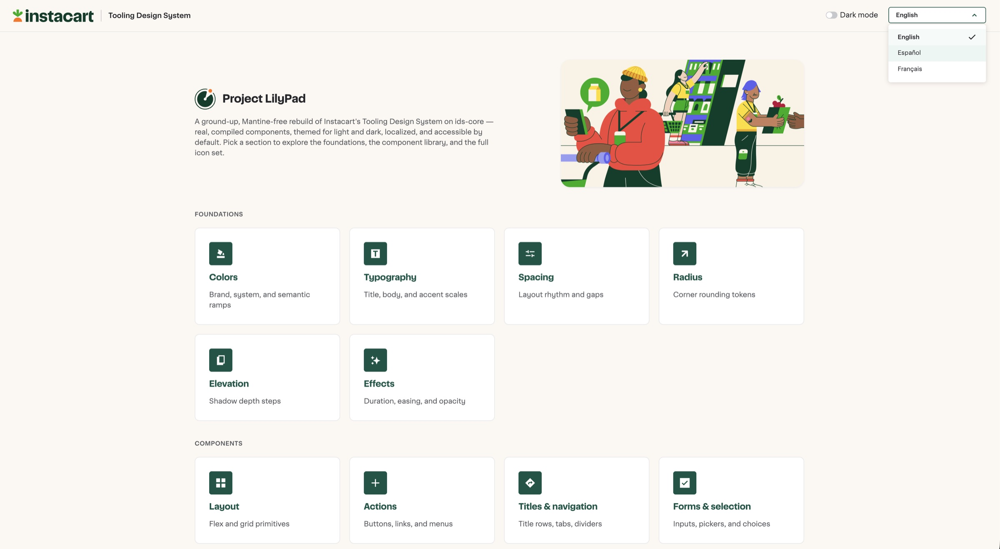
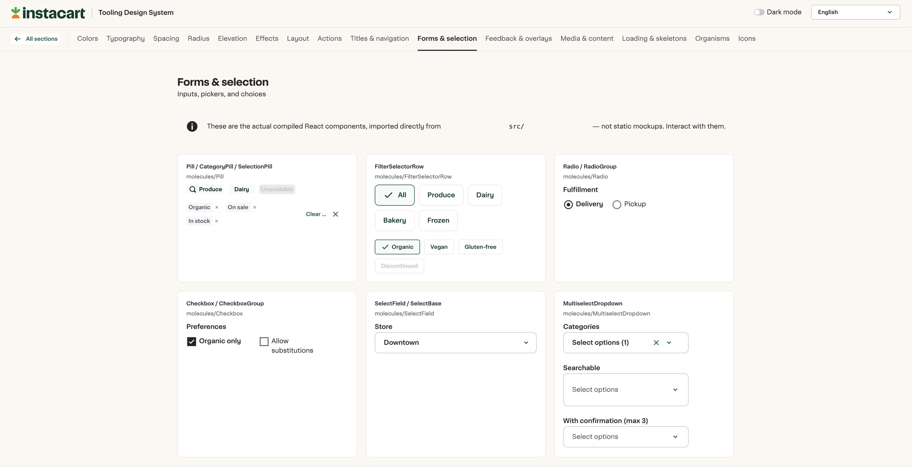
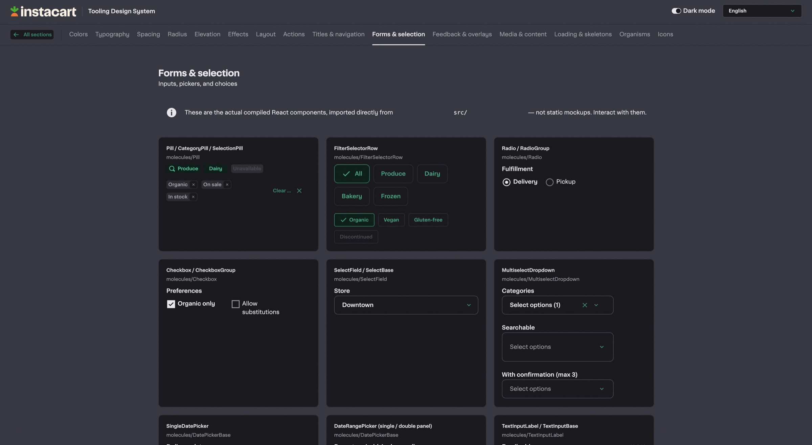
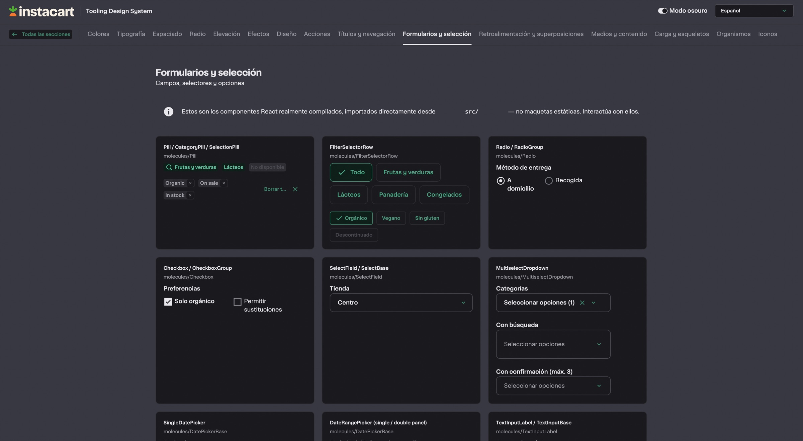

This deck is optimized for larger screens.
A component library where every part ships with a contract an AI agent can build from. Fully owned, end to end.
I used TinyRoots.ai, a personal side project, as the test case. Brand, tokens, components, and real pages.
The industry excitement is real, but everyone starts from zero: prompting with no foundation and no contract.
With a solid foundation, the AI didn't guess. It built correctly. Construction became review.
The mock collapsed intent, artifact, and truth into one file. Every handoff was lossy because of it.
What it should be. True by aim.
Intent made precise enough that code can't drift from it. Agents build from this.
True by existence. One token change cascades everywhere.
Proof of concept. 27 components, 12 screens. The cascade worked end to end.
Walked the team through TinyRoots live. Validated the direction was worth pursuing inside TDS.
Intent, contract, code. The written case that earned Director-level attention.
Two engineers staffed against it: eval layer and doc templates.
One shared a11y and theming primitive stack under every component. No Mantine.
Intent, anatomy, tokens, states, a11y, do/don't. Machine-readable.
Designers scaffold pages on-contract from a prompt + low-fi prototype.

Every tile renders the actual compiled React component, imported from src. Nothing here is a mockup.
Foundations and components are organized the way the library is, so the docs and the code stay one thing.
Every control works. Type in the field, open the dropdown, pick a date.
Light and dark, English, Spanish and French. One switch each, no forks.



The measure: scaffold accuracy. How faithfully AI output matches intent and the component contract, with minimal manual correction.